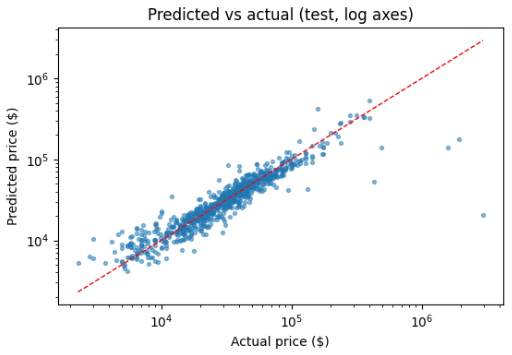
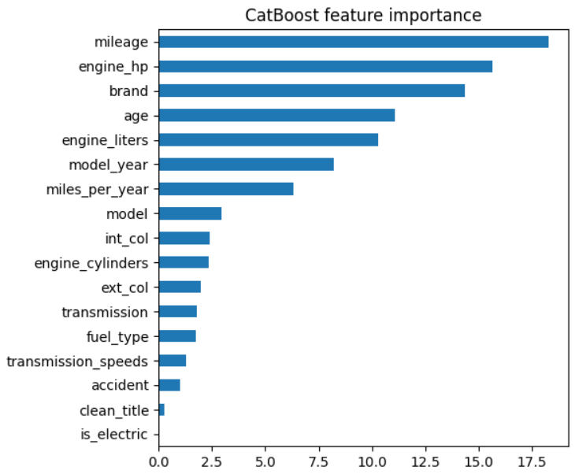
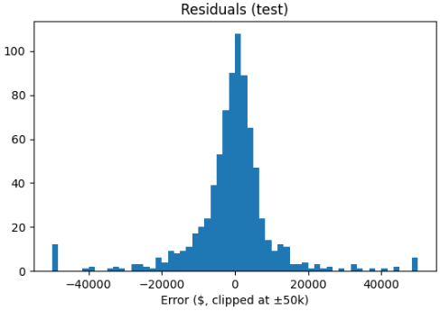

A machine learning model that predicts what a used car is worth.

A machine learning model that takes a used car’s details and predicts its price. It looks at things like mileage, engine horsepower and size, brand, model year and age, fuel type, transmission, and whether the car has had an accident.
The model is a CatBoost gradient-boosted regressor, which handles categorical features like brand and model directly. I added engineered features such as age and miles per year, and judged it on a held-out test set. [ADD: where the data came from, how you cleaned it, and which other models you compared.]
Predictions track actual prices closely across a wide range, from a few thousand dollars to six figures, and most errors sit near zero. The misses are mostly rare, very expensive cars. [ADD: your headline accuracy number, such as error in dollars or R², and what you would improve.]

